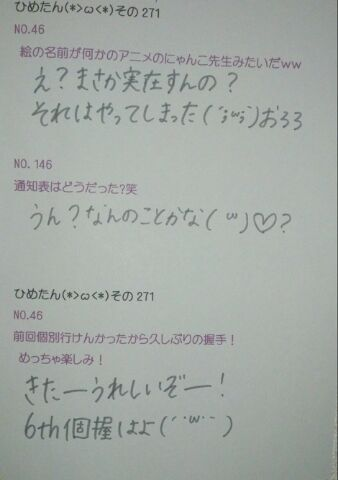

| 2013/06 11 Tue | ひめたん(*>ω<*)そ の304 |
前回のブログはなんだか途中
力尽きてた(´・ω・｀)ごめなさいーなにゆえー
前回のクイズの答えは 102曲！
履歴全部写めったー感動したー
ここには貼らんけどー書かんけどー
でもね楽しかったですよ( ^ω^ )
また行こうねー♪
姉さんと３人で行きたいでーすー
履歴は貼らんけど。そうですねー
恵比中さんの「仮契約のシンデレラ」なんか
ひとりで歌ったからねー///
ベスト・オブ・楽しかった曲(*^ω^*)
はいーそんな感じでねっえー
コメント読んでると
「ひめたんの新衣装みたい！」ってお声
いっぱいありがとー\( ω )/歓喜ー
なんでひめたんは
写め撮ってないのほんとに。けへー
もうねーけへーとか言ってる場合ちゃうねん
なんで写め撮ってないの
自分なんでよねえー
新衣装すきー♪

ひめたさん＆じょーさん＆ずーさん
力尽きてた(´・ω・｀)ごめなさいーなにゆえー
前回のクイズの答えは 102曲！
履歴全部写めったー感動したー
ここには貼らんけどー書かんけどー
でもね楽しかったですよ( ^ω^ )
また行こうねー♪
姉さんと３人で行きたいでーすー
履歴は貼らんけど。そうですねー
恵比中さんの「仮契約のシンデレラ」なんか
ひとりで歌ったからねー///
ベスト・オブ・楽しかった曲(*^ω^*)
はいーそんな感じでねっえー
コメント読んでると
「ひめたんの新衣装みたい！」ってお声
いっぱいありがとー\( ω )/歓喜ー
なんでひめたんは
写め撮ってないのほんとに。けへー
もうねーけへーとか言ってる場合ちゃうねん
なんで写め撮ってないの
自分なんでよねえー
新衣装すきー♪
ひめたさん＆じょーさん＆ずーさん

 ひめたんのお勧め散歩ソングは、何ですか？
ひめたんのお勧め散歩ソングは、何ですか？
なんでしょうー
乃木坂の曲をシャッフルでもして聴くと
全部で25曲あるからね飽きないね。
個人的に「涙がまだ悲しみだった頃」の
オケ好きよ(〃ω〃)歌入りももちろんだけどー
広島弁の「わや」って
どんなときに使いますか？
"カオスッッッ"
って感じの時ですかね☆
メンバーがドラマで
広島弁を使ってたようだけど、
ひめたんに教えてもらいに来た？
メンバーにヒロシマの方言指導とか
しなかったの？
いやいやー
先生から習ったゆーてましたよー＊
みんな頑張ってましたね\( ω )/
ひめたんは普段メンバーと話すとき
広島弁出たりするのー？あと家族といるときは
バリバリの広島弁？(*^^*)
えっとね、標準語も混ざりつつ
最近は関西弁にもハマりつつ、ごっちゃやね。
まさに"わやー"。
ひめたんは大和ミュージアム
いったことありますか？
あるよー！
おっきい船の模型があったの覚えてるよー
戦艦カレーみたいなのがあった気がするよー
ひめたんビームのコツ教えて〜?
瞳をギラギラさせてみましょう(<・ω・>)

ちょっといろいろあってびしょびしょ@新曲MV

台風くるぞ！
(＊´・ω・＊)
コメント(195)
2013/06/11 22:54